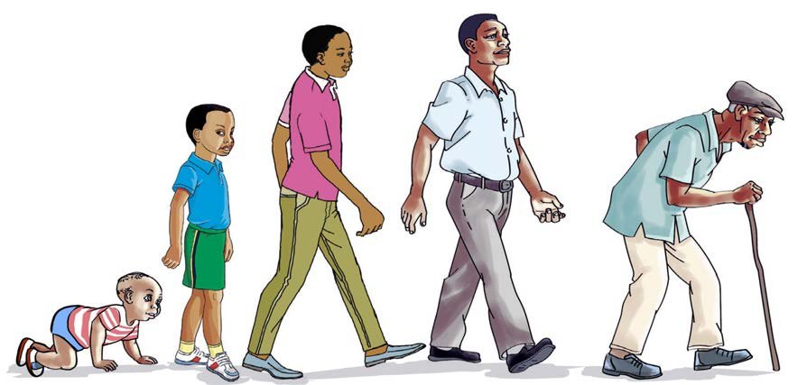

Excretion
All living things excrete wastes from their bodies. Excretion means getting rid of waste. In animals, excretion is carried out by kidneys, lungs and skin. Excretory materials get out of the body in the form of urine or sweat. Plants do not have special organs for excretion. Plants excrete wastes in the form of water vapour, gases, gums, oils, latex and resins. These wastes can be excreted through leaves, stems or roots.
Growth
Animals, including human beings grow by increasing in size and mass. They pass through different stages of development. The stages are infancy, childhood, adulthood and elderly. Figure 8(a) shows stages of growth in human beings.
